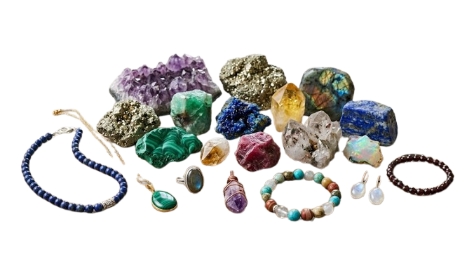

ม.ล.อัคนี นวรัตน หรือ อาจารย์หม่อม นักบำบัดพลังจิตผู้มีประสบการณ์การบำบัดโดยใช้คริสตัล จากสถาบันวิจัยและพัฒนาจิต ชมรมสมาธิธรรม อธิบายว่า การบำบัดโรคด้วยหินต่างๆ คือ การสร้างสมดุลให้แก่พลังชีวิต เพราะร่างกายของคนเรามีคลื่นพลังแม่เหล็กไฟฟ้า หรือที่เรียกแสงออร่า (Aura) ที่เปล่งออกมาตามสุขภาพ ความเจ็บป่วย อารมณ์ และลักษณะนิสัยโดยธรรมชาติ แม้มนุษย์จะมองไม่เห็นด้วยตา แต่ทุกคนสามารถรับข้อมูลและความรู้สึกจากแสงออร่าของผู้อื่นได้ หากฝึกฝนก็สามารถสัมผัสได้ด้วยตา มือ จิต จนถึงขึ้นอ่านความหมายได้ด้วย หิน ก็มีการถ่ายพลังด้วยคลื่นแม่เหล็กไฟฟ้าเช่นกัน หากเราเจ็บป่วยร่างกายอ่อนแอ เมื่อสัมผัสไปยังหินก้อนที่มีพลังดีๆ กฎของการสะท้อนกลับจะเกิดขึ้น พลังจากหินจะแทรกซึมส่งคลื่นความถี่สู่ร่างกายไปกระตุ้นจิตใต้สำนึกของเราให้จัดการกับความไม่สมดุล ขับไล่สิ่งที่เป็นด้านลบและความอ่อนแอออกไป

ความเชื่อในเรื่องของการใช้หินเพื่อเป็นเครื่องรางของขลังนั้นมีมาตั้งแต่ยุคโบราณ เนื่องจากมีความเชื่อกันว่า หินบางชนิดเมื่อมีการนำมาคำนวณกับ วัน เดือน ปีเกิด ของผู้สวมใส่ จะสามารถนำโชคและเพิ่มพลังแห่งการปกป้องคุ้มครองรวมทั้งขจัดภัยอันตรายให้แก่เจ้าของได้ จึงนิยมที่จะมอบหินที่ตนเชื่อว่าเป็นเครื่องรางคุ้มภัยให้แก่บุคคลอันเป็นที่รัก เพราะเชื่อว่าหินหรือรัตนชาติทุกก้อนมีรังสีเช่นเดียวกับดาวเคราะห์อื่นๆ และรังสีนั้นมีผลต่อมนุษย์ ความเชื่อนี้มีมากในแถบเอเชีย อินเดีย อียิปต์ รวมถึงไทยด้วย จึงได้มีการนำหินที่มีค่าและหายากหรือที่นิยมเรียกกันว่าพลอย มาใช้สวมใส่ให้ถูกโฉลกกับ วัน เดือน ปีเกิด ของตนเอง เพื่อความเป็นสิริมงคล อาทิ